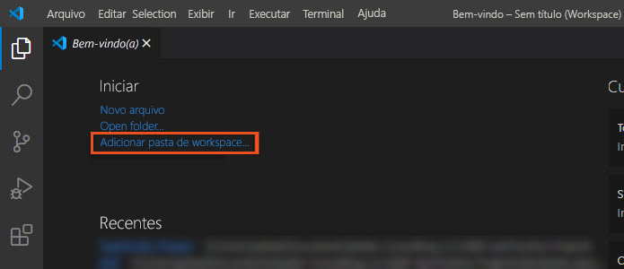

Exercício – configurar um projeto do TypeScript
Neste exercício, você criará um projeto do TypeScript. Em seguida, você verificará que o seu ambiente de desenvolvimento está configurado corretamente executando o compilador e verificando se o arquivo JavaScript foi gerado.
Configurar um projeto do TypeScript no Visual Studio Code
Nesta etapa, você cria um workspace do projeto no Visual Studio Code e inicializa o projeto.
- Abra o Visual Studio Code.
- No painel de Boas-vindas, selecione Adicionar pasta de workspace.

- Crie uma pasta de projeto e selecione Adicionar.
- No painel esquerdo, selecione o botão Explorador.
- No painel Explorador, selecione o ícone Novo Arquivo.
- Em Exercício do Módulo 01, digite o nome do arquivo module01.ts e pressione Enter. O arquivo TypeScript aparece em um novo editor de código.
Gerar um arquivo tsconfig.json
O compilador do TypeScript aplica o comportamento padrão quando você compila o código-fonte TypeScript. Mas você pode modificar as opções do compilador do TypeScript adicionando um arquivo tsconfig.json à raiz da sua pasta de projeto do TypeScript. Esse arquivo define as configurações do projeto TypeScript, como as opções do compilador e os arquivos que devem ser incluídos.
Você pode usar a opção init do compilador do TypeScript para gerar um arquivo TSConfig com as opções padrão.
- No Visual Studio Code, abra uma nova janela Terminal selecionando Terminal>Novo Terminal.
- No prompt de comando, digite tsc --init.
- Observe que o novo arquivo tsconfig.json foi adicionado ao painel Explorador. Talvez seja necessário atualizar o painel Explorador para exibir o arquivo.
- Abra o arquivo tsconfig.json no editor de código. Você verá que ele tem muitas opções, a maioria das quais estão como comentários. Examine a descrição de cada opção habilitada.
- No arquivo tsconfig.json, procure a opção de destino e altere-a para "ES2015".
- Atualize o arquivo tsconfig.json para que o compilador salve todos os arquivos JavaScript em uma nova pasta.
- a. No painel Explorador, crie uma pasta chamada build em seu projeto.
- b. No arquivo tsconfig.json, procure a opção outDir, remova o comentário e defina o parâmetro para build.
- Salve o arquivo tsconfig.json.
- No prompt de comando, digite tsc. Isso lê o arquivo tsconfig.json e redefine as opções para o projeto.
Compilar TypeScript para JavaScript
Vamos adicionar um código JavaScript ao arquivo TypeScript e compilá-lo.
Copie e cole o código JavaScript a seguir no editor module01.ts.
JavaScript
function addNumbers(x, y) {
return x + y;
}
console.log(addNumbers(3, 6));
Observe que, embora você ainda não tenha compilado o código, o Visual Studio Code usou o suporte interno a TypeScript para verificá-lo quanto a tipos. Como antes, há erros de tipo nos dois parâmetros da função addNumbers.
- Editor do Visual Studio Code com IntelliSense, mostrando que há um erro de verificação de tipo no primeiro parâmetro da função addNumbers.
- Atualize o código TypeScript para especificar um tipo para cada parâmetro. Substitua x por x: number e substitua y por y: number.
- Salve o arquivo TypeScript. O compilador do TypeScript funciona apenas na versão salva do arquivo.
- No prompt de comando do Terminal, digite tsc module01.ts. O compilador deve ser executado sem erros.
Observe que um novo arquivo JavaScript foi adicionado, mas não está na pasta build no Explorador. Talvez seja necessário atualizar o painel Explorador para exibir o arquivo. Quando você executa o comando tsc em apenas um arquivo, o compilador ignora o arquivo tsconfig.json.
- Para carregar o arquivo de configuração e compilar todos os arquivos .ts na pasta, execute tsc sem nenhum nome de arquivo. Isso deve adicionar o arquivo .js à pasta build. Lembre-se de excluir o arquivo .js extra na pasta raiz.
- Abra o arquivo module01.js e selecione o botão Dividir o Editor à Direita no canto superior direito para abrir um novo modo de exibição do editor.
Agora, você deve ser capaz de ver os arquivos .ts e .js lado a lado. Observe que eles são idênticos, exceto pelo fato de que o arquivo .js não inclui as novas anotações de tipo.
- No prompt de comando do Terminal, insira node .\build\module01.js. Isso executa o JavaScript e exibe o resultado no log do console.
Adicionar um arquivo HTML
Como etapa final, adicione um arquivo HTML ao projeto para que você possa executar e testar o código JavaScript.
- No Explorador, selecione o botão Novo Arquivo.
- Digite o nome do arquivo module01.html e pressione Enter. O arquivo HTML aparece em um novo editor de código.
- Copie e cole o HTML a seguir no editor e salve o arquivo.
HTML
<!DOCTYPE html>
<html lang="en" dir="ltr">
<head>
<meta charset="UTF-8">
<title>Test JavaScript</title>
</head>
<body>
<h1>Test JavaScript</h1>
<p id="date"></p>
<p>This page calls the script module01.js and is used for testing.</p>
<script src="./build/module01.js"></script>
</body>
</html>
- No Explorador, clique com o botão direito do mouse em module01.html e selecione Abrir no Navegador Padrão.
- Ative as ferramentas para desenvolvedores do seu navegador e você estará pronto para iniciar a codificação em TypeScript!
Solução do exercício
Você pode baixar o workspace do Visual Studio Code concluído do repositório de código do GitHub. Para executar a solução, você precisa primeiro instalar o seguinte software em seu computador:
- Visual Studio Code (ou o IDE de sua escolha)
- npm (Gerenciador de Pacotes no Node)
- tsc (Compilador do TypeScript)
Para obter melhores resultados, siga as instruções completas para configurar seu ambiente e usar o compilador do TypeScript neste módulo. Depois de configurar o seu ambiente, execute qualquer um dos arquivos de solução ou configuração do laboratório no roteiro de aprendizagem Criar aplicativos JavaScript usando TypeScript.